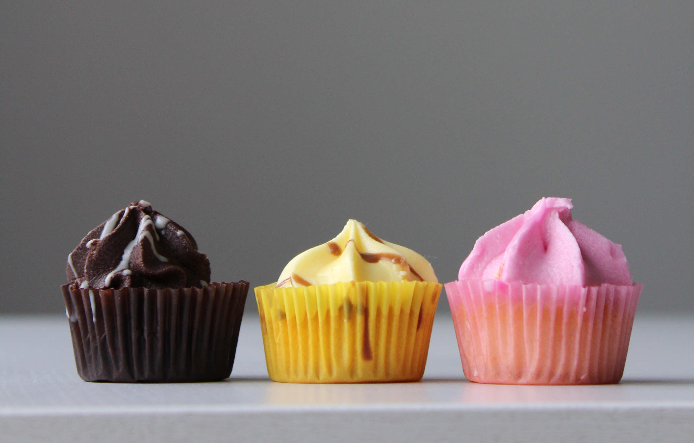

---
# Feel free to add content and custom Front Matter to this file.
# To modify the layout, see https://jekyllrb.com/docs/themes/#overriding-theme-defaults
layout: home
title: Welcome
---

<div class="welcome-container">
  
  <div class="welcome-text"><span class="welcome-shrink">Welcome to</span> <br> A <span class="candypink relsize4">CandyPink</span> Blog </div>
</div>

